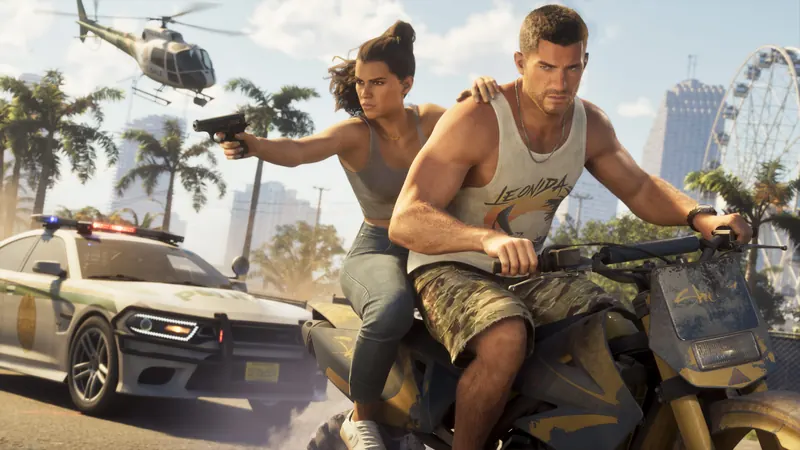

Guía de inicio
12 cosas que conviene saber antes de empezar GTA 6
Guarda en ranuras distintas, protege tu dinero en el banco, registra los coches que quieras conservar y no cuentes con los trucos hasta terminar la historia.
Resumen de análisis y guías del lanzamiento. Cada punto enlaza a su página con fuentes.